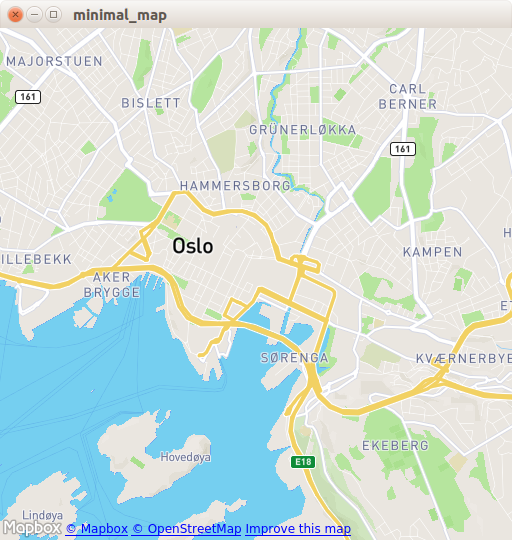

Map QML Type
The Map type displays a map. More...
| Import Statement: | import QtLocation 6.6 |
| Since: | QtLocation 5.0 |
- List of all members, including inherited members
- Map is part of QML Maps Plugin.
Properties
- activeMapType : mapType
- bearing : real
- center : coordinate
- color : color
- copyrightsVisible : bool
- error : enumeration
- errorString : string
- fieldOfView : real
- mapItems : list<MapItem>
- mapReady : bool
- maximumFieldOfView : real
- maximumTilt : real
- maximumZoomLevel : real
- minimumFieldOfView : real
- minimumTilt : real
- minimumZoomLevel : real
- plugin : Plugin
- supportedMapTypes : list<mapType>
- tilt : real
- visibleArea : rect
- visibleRegion : geoshape
- zoomLevel : real
Signals
- copyrightLinkActivated(string link)
Methods
- void addMapItem(MapItem item)
- void addMapItemGroup(MapItemGroup itemGroup)
- void addMapItemView(MapItemView itemView)
- void alignCoordinateToPoint(coordinate coordinate, QPointF point)
- void clearData()
- void clearMapItems()
- void fitViewportToGeoShape(geoShape, margins)
- void fitViewportToMapItems(list<MapItems> items)
- void fitViewportToVisibleMapItems()
- point fromCoordinate(coordinate coordinate, bool clipToViewPort)
- void pan(int dx, int dy)
- void prefetchData()
- void removeMapItem(MapItem item)
- void removeMapItemGroup(MapItemGroup itemGroup)
- void removeMapItemView(MapItemView itemView)
- void setBearing(real bearing, coordinate coordinate)
- coordinate toCoordinate(QPointF position, bool clipToViewPort)
Detailed Description
The Map type is used to display a map or image of the Earth, with the capability to also display interactive objects tied to the map's surface.
There are a variety of different ways to visualize the Earth's surface in a 2-dimensional manner, but all of them involve some kind of projection: a mathematical relationship between the 3D coordinates (latitude, longitude and altitude) and 2D coordinates (X and Y in pixels) on the screen.
Different sources of map data can use different projections, and from the point of view of the Map type, we treat these as one replaceable unit: the Map plugin. A Map plugin consists of a data source, as well as all other details needed to display its data on-screen.
The current Map plugin in use is contained in the plugin property of the Map item. In order to display any image in a Map item, you will need to set this property. See the Plugin type for a description of how to retrieve an appropriate plugin for use.
The geographic region displayed in the Map item is referred to as its viewport, and this is defined by the properties center, and zoomLevel. The center property contains a coordinate specifying the center of the viewport, while zoomLevel controls the scale of the map. See each of these properties for further details about their values.
When the map is displayed, each possible geographic coordinate that is visible will map to some pixel X and Y coordinate on the screen. To perform conversions between these two, Map provides the toCoordinate and fromCoordinate functions, which are of general utility.
Map Objects
Map related objects can be declared within the body of a Map object in Qt Quick and will automatically appear on the Map. To add an object programmatically, first be sure it is created with the Map as its parent (for example in an argument to Component::createObject). Then call the addMapItem method on the Map, if the type of this object is one of MapCircle, MapRectangle, MapPolyline, MapPolygon, MapRoute or MapQuickItem. A corresponding removeMapItem method also exists to do the opposite and remove any of the above types of map objects from the Map.
Moving Map objects around, resizing them or changing their shape normally does not involve any special interaction with Map itself – changing these properties in a map object will automatically update the display.
Performance
Maps are rendered using OpenGL (ES) and the Qt Scene Graph stack, and as a result perform quite well where GL accelerated hardware is available.
For "online" Maps, network bandwidth and latency can be major contributors to the user's perception of performance. Extensive caching is performed to mitigate this, but such mitigation is not always perfect.
In general, large and complex Map items such as polygons and polylines with large numbers of vertices can have an adverse effect on UI performance.
Example Usage
The following snippet shows a simple Map and the necessary Plugin type to use it. The map is centered over Oslo, Norway, with zoom level 14.
import QtQuick import QtLocation import QtPositioning Window { ... Plugin { id: mapPlugin name: "osm" } Map { id: map anchors.fill: parent plugin: mapPlugin center: QtPositioning.coordinate(59.91, 10.75) // Oslo zoomLevel: 14 property geoCoordinate startCentroid PinchHandler { id: pinch target: null onActiveChanged: if (active) { map.startCentroid = map.toCoordinate(pinch.centroid.position, false) } onScaleChanged: (delta) => { map.zoomLevel += Math.log2(delta) map.alignCoordinateToPoint(map.startCentroid, pinch.centroid.position) } onRotationChanged: (delta) => { map.bearing -= delta map.alignCoordinateToPoint(map.startCentroid, pinch.centroid.position) } grabPermissions: PointerHandler.TakeOverForbidden } WheelHandler { id: wheel // workaround for QTBUG-87646 / QTBUG-112394 / QTBUG-112432: // Magic Mouse pretends to be a trackpad but doesn't work with PinchHandler // and we don't yet distinguish mice and trackpads on Wayland either acceptedDevices: Qt.platform.pluginName === "cocoa" || Qt.platform.pluginName === "wayland" ? PointerDevice.Mouse | PointerDevice.TouchPad : PointerDevice.Mouse rotationScale: 1/120 property: "zoomLevel" } DragHandler { id: drag target: null onTranslationChanged: (delta) => map.pan(-delta.x, -delta.y) } Shortcut { enabled: map.zoomLevel < map.maximumZoomLevel sequence: StandardKey.ZoomIn onActivated: map.zoomLevel = Math.round(map.zoomLevel + 1) } Shortcut { enabled: map.zoomLevel > map.minimumZoomLevel sequence: StandardKey.ZoomOut onActivated: map.zoomLevel = Math.round(map.zoomLevel - 1) } } }

Property Documentation
activeMapType : mapType |
Access to the currently active map type.
This property can be set to change the active map type. See the supportedMapTypes property for possible values.
See also mapType.
[since QtLocation 5.9] bearing : real |
This property holds the bearing for the map. The default value is 0. If the Plugin used for the Map supports bearing, the valid range for this value is between 0 and 360. If the Plugin used for the Map does not support bearing, changing this property will have no effect.
This property was introduced in QtLocation 5.9.
center : coordinate |
This property holds the coordinate which occupies the center of the mapping viewport. Invalid center coordinates are ignored.
The default value is an arbitrary valid coordinate.
color : color |
This property holds the background color of the map element.
copyrightsVisible : bool |
This property holds the visibility of the copyrights notice. The notice is usually displayed in the bottom left corner. By default, this property is set to true.
Note: Many map providers require the notice to be visible as part of the terms and conditions. Please consult the relevant provider documentation before turning this notice off.
[read-only] error : enumeration |
This read-only property holds the last occurred mapping service provider error.
- Map.NoError - No error has occurred.
- Map.NotSupportedError -The maps plugin property was not set or there is no mapping manager associated with the plugin.
- Map.UnknownParameterError -The plugin did not recognize one of the parameters it was given.
- Map.MissingRequiredParameterError - The plugin did not find one of the parameters it was expecting.
- Map.ConnectionError - The plugin could not connect to its backend service or database.
See also QGeoServiceProvider::Error.
[read-only] errorString : string |
This read-only property holds the textual presentation of the latest mapping provider error. If no error has occurred, an empty string is returned.
An empty string may also be returned if an error occurred which has no associated textual representation.
See also QGeoServiceProvider::errorString().
[since QtLocation 5.9] fieldOfView : real |
This property holds the field of view of the camera used to look at the map, in degrees. If the plugin property of the map is not set, or the plugin does not support mapping, the value is 45 degrees.
Note that changing this value implicitly changes also the distance between the camera and the map, so that, at a tilting angle of 0 degrees, the resulting image is identical for any value used for this property.
For more information about this parameter, consult the Wikipedia articles about Field of view and Angle of view.
This property was introduced in QtLocation 5.9.
See also minimumFieldOfView and maximumFieldOfView.
[read-only] mapItems : list<MapItem> |
Returns the list of all map items in no particular order. These items include items that were declared statically as part of the type declaration, as well as dynamical items (addMapItem, MapItemView).
See also addMapItem, removeMapItem, and clearMapItems.
[read-only] mapReady : bool |
This property holds whether the map has been successfully initialized and is ready to be used. Some methods, such as fromCoordinate and toCoordinate, will not work before the map is ready. Due to the architecture of the Map, it's advised to use the signal emitted for this property in place of Component.onCompleted, to make sure that everything behaves as expected.
[since QtLocation 5.9] maximumFieldOfView : real |
This property holds the maximum valid field of view for the map, in degrees.
The minimum tilt field of view by the plugin used is an upper bound for this property. If the plugin property is not set or the plugin does not support mapping, this property is 179.
This property was introduced in QtLocation 5.9.
See also fieldOfView and minimumFieldOfView.
[since QtLocation 5.9] maximumTilt : real |
This property holds the maximum valid tilt for the map, in degrees.
The maximum tilt defined by the plugin used is an upper bound for this property. If the plugin property is not set or the plugin does not support mapping, this property is 89.5.
Since QtLocation 5.12, plugins can additionally restrict this value depending on the current zoom level.
This property was introduced in QtLocation 5.9.
See also tilt and minimumTilt.
maximumZoomLevel : real |
[since QtLocation 5.9] minimumFieldOfView : real |
This property holds the minimum valid field of view for the map, in degrees.
The minimum tilt field of view by the plugin used is a lower bound for this property. If the plugin property is not set or the plugin does not support mapping, this property is 1.
This property was introduced in QtLocation 5.9.
See also fieldOfView and maximumFieldOfView.
[since QtLocation 5.9] minimumTilt : real |
This property holds the minimum valid tilt for the map, in degrees.
The minimum tilt defined by the plugin used is a lower bound for this property. If the plugin property is not set or the plugin does not support mapping, this property is 0.
Since QtLocation 5.12, plugins can additionally restrict this value depending on the current zoom level.
This property was introduced in QtLocation 5.9.
See also tilt and maximumTilt.
minimumZoomLevel : real |
This property holds the minimum valid zoom level for the map.
The minimum zoom level defined by the plugin used is a lower bound for this property. However, the returned value is also canvas-size-dependent, and can be higher than the user-specified value, or than the minimum zoom level defined by the plugin used, to prevent the map from being smaller than the viewport in either dimension.
If the plugin property is not set or the plugin does not support mapping, this property is 0.
plugin : Plugin |
This property holds the plugin which provides the mapping functionality.
This is a write-once property. Once the map has a plugin associated with it, any attempted modifications of the plugin will be ignored.
This read-only property holds the set of map types supported by this map.
See also activeMapType.
[since QtLocation 5.9] tilt : real |
This property holds the tilt for the map, in degrees. The default value is 0. The valid range for this value is [ minimumTilt, maximumTilt ]. If the Plugin used for the Map does not support tilting, changing this property will have no effect.
This property was introduced in QtLocation 5.9.
See also minimumTilt and maximumTilt.
visibleArea : rect |
This property holds the visible area inside the Map QML element. It is a rect whose coordinates are relative to the Map element. Its size will be clamped to the size of the Map element. A null visibleArea means that the whole Map is visible.
visibleRegion : geoshape |
This property holds the region which occupies the viewport of the map. The camera is positioned in the center of the shape, and at the largest integral zoom level possible which allows the whole shape to be visible on the screen. This implies that reading this property back shortly after having been set the returned area is equal or larger than the set area.
Setting this property implicitly changes the center and zoomLevel of the map. Any previously set value to those properties will be overridden.
Note: Since Qt 5.14 This property provides change notifications.
zoomLevel : real |
This property holds the zoom level for the map.
Larger values for the zoom level provide more detail. Zoom levels are always non-negative. The default value is 8.0. Depending on the plugin in use, values outside the [minimumZoomLevel, maximumZoomLevel] range, which represent the range for which tiles are available, may be accepted, or clamped.
Signal Documentation
copyrightLinkActivated(string link) |
This signal is emitted when the user clicks on a link in the copyright notice. The application should open the link in a browser or display its contents to the user.
Note: The corresponding handler is onCopyrightLinkActivated.
Method Documentation
void addMapItem(MapItem item) |
Adds the given item to the Map (for example MapQuickItem, MapCircle). If the object already is on the Map, it will not be added again.
As an example, consider the case where you have a MapCircle representing your current position:
import QtQuick import QtPositioning import QtLocation PositionSource { id: positionSource } Map { id: map property MapCircle circle Component.onCompleted: { circle = Qt.createQmlObject('import QtLocation; MapCircle {}', page) circle.center = positionSource.position.coordinate circle.radius = 5000.0 circle.color = 'green' circle.border.width = 3 map.addMapItem(circle) } }
Note: MapItemViews cannot be added with this method.
See also mapItems, removeMapItem, and clearMapItems.
void addMapItemGroup(MapItemGroup itemGroup) |
Adds the map items contained in the given itemGroup to the Map (for example MapQuickItem, MapCircle).
See also MapItemGroup and removeMapItemGroup.
void addMapItemView(MapItemView itemView) |
Adds itemView to the Map.
See also MapItemView and removeMapItemView.
void alignCoordinateToPoint(coordinate coordinate, QPointF point) |
Aligns coordinate to point. This method effectively extends the functionality offered by the center qml property, allowing to align a coordinate to point of the Map element other than its center. This is useful in those applications where the center of the scene (e.g., a cursor) is not to be placed exactly in the center of the map.
If the map is tilted, and coordinate happens to be behind the camera, or if the map is not ready (see mapReady), calling this method will have no effect.
The release of this API with Qt 5.10 is a Technology Preview.
See also center.
void clearData() |
Clears map data collected by the currently selected plugin.
Note: This method will delete cached files.
See also plugin.
void clearMapItems() |
Removes all items and item groups from the map.
See also mapItems, addMapItem, removeMapItem, addMapItemGroup, and removeMapItemGroup.
void fitViewportToGeoShape(geoShape, margins) |
Fits the viewport to a specific geo shape geoShape. The margins are in screen pixels.
Note: If the projection used by the plugin is not WebMercator, and the plugin does not have fitting to shape capability, this method will do nothing.
See also visibleRegion.
void fitViewportToMapItems(list<MapItems> items = {}) |
If no argument is provided, fits the current viewport to the boundary of all map items. The camera is positioned in the center of the map items, and at the largest integral zoom level possible which allows all map items to be visible on screen. If items is provided, fits the current viewport to the boundary of the specified map items only.
Note: This method gained the optional items argument since Qt 5.15. In previous releases, this method fitted the map to all map items.
See also fitViewportToVisibleMapItems.
void fitViewportToVisibleMapItems() |
Fits the current viewport to the boundary of all visible map items. The camera is positioned in the center of the map items, and at the largest integral zoom level possible which allows all map items to be visible on screen.
See also fitViewportToMapItems.
point fromCoordinate(coordinate coordinate, bool clipToViewPort) |
Returns the position relative to the map item which corresponds to the coordinate.
If clipToViewPort is true, or not supplied then returns an invalid QPointF if coordinate is not within the current viewport.
void prefetchData() |
Optional hint that allows the map to prefetch during this idle period
void removeMapItem(MapItem item) |
Removes the given item from the Map (for example MapQuickItem, MapCircle). If the MapItem does not exist or was not previously added to the map, the method does nothing.
See also mapItems, addMapItem, and clearMapItems.
void removeMapItemGroup(MapItemGroup itemGroup) |
Removes itemGroup and the items contained therein from the Map.
See also MapItemGroup and addMapItemGroup.
void removeMapItemView(MapItemView itemView) |
Removes itemView and the items instantiated by it from the Map.
See also MapItemView and addMapItemView.
void setBearing(real bearing, coordinate coordinate) |
Sets the bearing for the map to bearing, rotating it around coordinate. If the Plugin used for the Map supports bearing, the valid range for bearing is between 0 and 360. If the Plugin used for the Map does not support bearing, or if the map is tilted and coordinate happens to be behind the camera, or if the map is not ready (see mapReady), calling this method will have no effect.
The release of this API with Qt 5.10 is a Technology Preview.
coordinate toCoordinate(QPointF position, bool clipToViewPort) |
Returns the coordinate which corresponds to the position relative to the map item.
If clipToViewPort is true, or not supplied then returns an invalid coordinate if position is not within the current viewport.